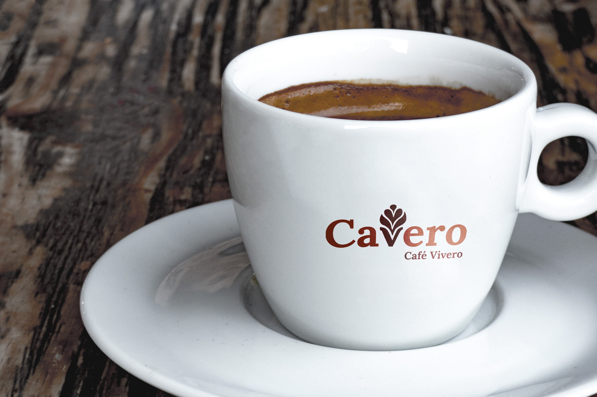
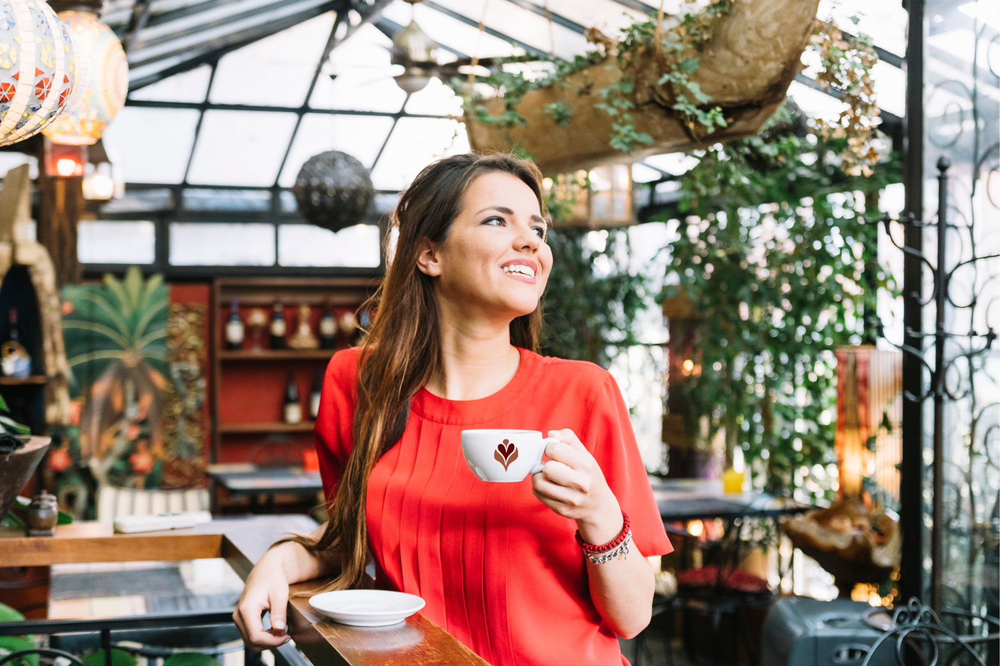

Cafetería y vivero

Café de especialidad
En CAVERO no servimos cualquier café. Usamos granos de origen seleccionados, con tostado reciente y trazabilidad asegurada. Trabajamos con productores responsables y priorizamos el comercio justo.
Ofrecemos distintos métodos de filtrado como V60, prensa francesa y espresso italiano. Cada taza es una experiencia pensada para que puedas frenar un momento, reconectar y disfrutar. Nuestros baristas están formados en técnicas de precisión, y te pueden ayudar a elegir según tus gustos.
Creemos que el café puede ser un ritual. Un instante simple, pero significativo, que acompañe tu día con calidad y calidez.
Ver más sobre café
Un vivero con alma
Nuestro vivero no es solo decoración: es parte del corazón de Cavero. Elegimos plantas de estación, especies nativas y opciones ideales para interiores o balcones urbanos. Cada semana renovamos nuestra selección para que siempre encuentres algo nuevo.
Las plantas no solo embellecen: purifican el aire, calman la mente y nos conectan con lo natural. Por eso también pensamos combos con macetas de diseño y kits de cuidado, para que te lleves más que una planta: una experiencia.
Combinar café y plantas es nuestra manera de ofrecer un refugio. Un equilibrio entre el disfrute sensorial y la naturaleza viva.
Ver más sobre el viveroEn Cavero creemos que el equilibrio se cultiva: en una taza bien servida, en una planta bien cuidada, en una pausa bien tomada. Por eso combinamos dos mundos que amamos, para que vos también puedas disfrutarlos juntos. Ya sea que vengas por tu café favorito, por una nueva planta para tu hogar o por ambos... siempre sos bienvenido.